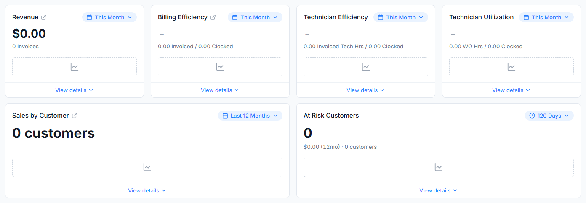

Branko's direction, approved by Chris: the three ratio tiles read a grey "-" (S3-E3). Every tile with nothing to plot shows a dashed outline with a line-chart icon at its center, no fill, the same height as the trend line (S4-R12 to S4-R18, S5-R16).

Real zeros stay: "$0.00", "0 customers" and "0" keep their headline, and the supporting lines do not change (S4-E2). A tile still loading shows the loading placeholder, not this one.